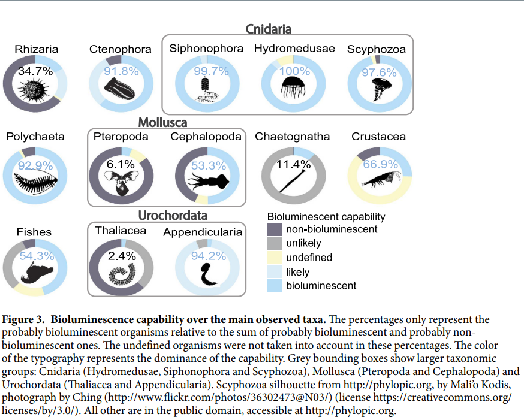

My motivations behind this project come largely from a fascination with how little we know of deep sea life, and how this may affect our apathy towards it throughout the ongoing climate crisis. Despite the ocean taking up 71% of all of our planet's space, more than 80% of it is unmapped, unobserved and unexplored (NOAA, 2021). Humans are able to map the seafloor using sonar, but only to a low resolution. I wanted to create a simulacrum of the ecologies that we know so little about but still need to protect. The enigma abscribed to this field of study gives me a lot of liberties in the representation and movements of my coded output. Due to the fact deep-sea ecosystems are still relatively understudied, our understanding of the specific impacts and vulnerabilities climate change to the organisms is still evolving, although advancing alongside research and technology. This lack of understanding hampers our ability to establish effective ecosystem-based management strategies that can balance resource utilization with the conservation of these fragile ecosystems.
The classification of a space in the ocean as "deep sea" starts at 200 metres in depth, when solar energy can no longer support the primary production of photosynthesis. Thus, 1 billion km^3 is said to be "deep water", making these marine ecosystems the largest biome on Earth. Previously thought to be a featureless and stable environment, the benthic zone has proven to be a remarkably diverse and interconnected habitat, supporting one of the highest levels of biodiversity on Earth (Ramirex-Llodra, E., 2020). These ecosystems play vital roles in maintaining crucial functions and providing various ecosystem services, including nutrient recycling, carbon storage, and valuable biological and mineral resources - all of which are essential for the overall health of our planet. Evidence of the biological and mineral resources has lead to a fast increase in the exploration and subsequent exploition of these materials, further driven by the rising demand for raw materials and the depletion of resources in coastal areas and on land. Furthermore, the remote nature of the deep seafloor has historically facilitated waste disposal practices, and despite current regulations on marine waste dumping, the problem of marine litter continues to escalate (Ramirez-Llodra E. et al., 2020).
Overfishing is a common topic when discussing the anthropogenic effects on marine life. Deep-sea fisheries primarily target depths below 1500 metres. Among the various fishing methods employed, bottom trawling, which involves dragging a net along the seafloor, has the most profound impact on both the targeted and non-targeted species, as well as their habitats. Deep-sea target species often have long lifespans and late maturation, making the sustainable exploitation of these communities challenging. Depleting the population of reproductively-active adults through fishing has proven to be unsustainable in most cases. The trawling gear used in these operations also causes extensive damage to the seafloor and benthic communities. Studies conducted in the Mediterranean, focusing on sedimentary slopes where trawling is prevalent, have revealed that regular trawling can trigger sediment flows downslope, with unknown consequences for the faunal communities (Martin, J. et al., 2008). Additionally, persistent trawling activities in an area can alter the shape of the underwater landscape, reducing the original complexity of the seafloor, akin to the impact of agriculture on land (Puig, P. et al. 2012). Fishing activities conducted over seamounts have significant impacts on both the targeted species and the overall ecosystem (Pitcher, T.J. et al., 2010). Seamounts are known for their diverse communities of stationary fauna, such as sponges and corals, which provide crucial habitats for other species. Bottom trawling poses a severe threat to these communities, and their recovery can take decades or even centuries (Ramirez-Llodra, E., 2020).
Oil and gas exploitation is another human activity that is a threat to deep-sea life. There has been a decline in land-based resources, and so advancements in technology have allowed this exploitation to continue into deeper and deeper waters. Routine drilling below 200 meters depth has become common in many regions, while ultra-deep water drilling activities (>1000 meters depth) reaching depths of 3000 meters are expanding in well-explored areas like the Gulf of Mexico [cite 60]. Some of the primary direct impacts occur locally and include physical damage to the benthic habitat and community caused by the installation of drilling infrastructure within approximately a 100-meter radius. Discharge of drilling muds and produced water can affect benthic communities up to about 300 meters from the source (Cordes, E.E. et al., 2016). These activities can lead to changes in density, biomass, and diversity across all size classes of the benthic community (meio-, macro-, and megafauna), although the effects on the microbial community remain relatively unknown. In areas near cold-water corals, the effects can be particularly significant, as thin layers (6.5 mm) of drill cuttings can bury coral polyps, resulting in increased mortality (Larsson, A.I. and Purser, A., 2011). Accidental oil spills, such as the Deepwater Horizon blowout in the Gulf of Mexico in 2010, can cause large-scale environmental impacts (Joye, S.B. et al., 2016). In the aftermath of the incident, impacts on the deep benthic fauna were detected in an area of 300 km2, with significant effects observed on cold-water coral communities located 22 km away from the well at depths of 1950 meters. While limited experiments have been conducted on the toxic effects of chemical dispersants used during oil spills on deep-sea fauna, there is evidence suggesting that dispersants can affect larval development, cause tissue degradation in invertebrates, and damage cold-water corals (Fisher, C.R. et al., 2014).
The deep ocean is facing escalating pressures caused by human activities that target its resources and contribute to the accumulation of synthetic waste and chemical pollution. When these various impacts act together, they can have synergistic effects on individual ecosystems, resulting in amplified consequences for the structure and functioning of faunal communities. Climate change-related stressors, such as warming water masses, de-oxygenation, changes in primary productivity, and ocean stratification, are particularly concerning as they have global implications. These climatic stressors, combined with the direct impacts of human activities like fishing or drilling, have the potential to reduce the resilience and recovery capacity of affected ecosystems. Moreover, different extractive industries may find themselves in conflict over space. For instance, in regions like New Zealand and Namibia, mineral resource reserves on the upper continental margin overlap with existing fishing grounds (New Zealand Parliament, 2015). Given the still limited scientific understanding of the composition and functioning of many deep-sea ecosystems, multiple stakeholders advocate for the development of precautionary and ecosystem-based management systems. These measures should aim to strike a balance between the utilization of mineral and biological resources and the preservation of healthy marine systems, along with the essential ecosystem services they provide.
Bioluminescence is a natural phenomenon exhibited by certain organisms, where they have the ability to produce and emit cold light. It is the result of a chemiluminsecent reaction occurring within the organism's body and is considered to play a large part in different ecological interactions. Although the focus of my project is deep-sea marine life, throughout the depth of the ocean bioluminescence can be found at an even rate, from the surface to the deep-sea. Different organisms employ variations of this basic mechanism to produce bioluminescence. The specific colors and patterns of light emitted can vary greatly, ranging from blue and green to red and even bioluminescent flashes. Some organisms can control the intensity and duration of their bioluminescent display, enabling them to communicate, attract mates, deter predators, or lure prey. This unique ability serves various roles in both intra- and inter-species interactions, contributing to the intricate dynamics of the natural world. The diversity of organisms employing bioluminescence has led to its utilization in a range of applications. In the deep ocean, bioluminescence has been harnessed to detect biological activities, shedding light on the hidden workings of marine ecosystems. It has also proven valuable in identifying the presence of pelagic animals, enabling researchers to study and monitor their distribution and behavior. Additionally, bioluminescence has been instrumental in assessing biomass for oceanographic research, aiding in the quantitative analysis of marine environments (Martini, S. and Haddock, S.H., 2017). Overall, bioluminescence serves as a captivating phenomenon that not only facilitates communication among organisms but also offers valuable insights and practical applications in various scientific disciplines, particularly in the exploration of the vast depths of the ocean. I believe this enrapturing quality will draw viewers into my visualisation. I have an aesthetic engagement with jellies or Cnidaria, and almost 100% of them were found to be bioluminescent in Martini and Haddock's study.
